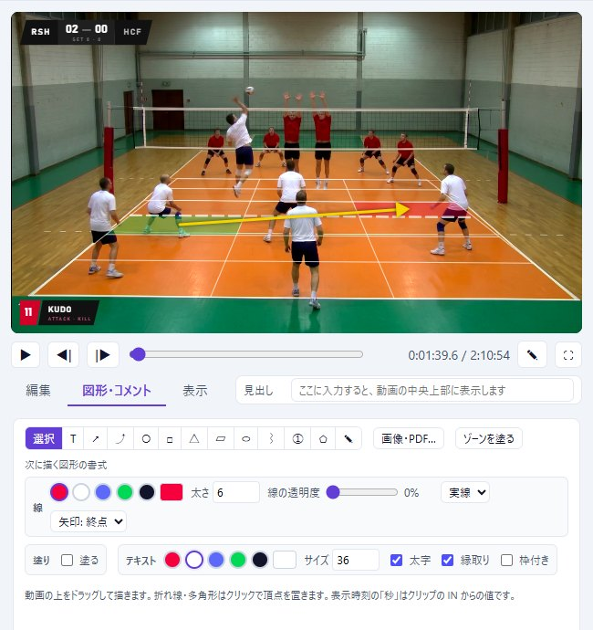
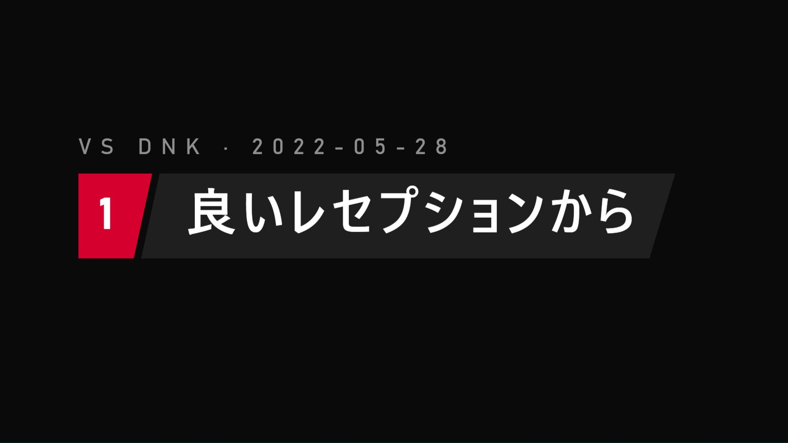

6. 動画に描く
クリップの上に、見出し、矢印、円、テキスト、画像を描きます。出す時間を決めたり、スローや停止を入れたりして、伝えたいことを足します。

図形・コメントの道具
シーンのクリップを選び、動画の下の図形・コメントタブを開きます。道具を選んで、動画の上をドラッグして描きます。

| 道具 | キー | 使い方 |
|---|---|---|
| 選択 | V | 描いた図形を選んで動かします。つまみで大きさを変えます。Shift + クリックで複数選べます。 |
| テキスト | T | 押した場所に文字を書きます。Alt + Enter で改行します。 |
| 矢印・曲線の矢印 | A | 始点から終点へドラッグします。Shift を押しながらだと、まっすぐ縦か横に引けます。曲線の矢印は、青い点を動かして曲げます。 |
| 円・四角・三角形 | C R G | ドラッグで描きます。三角形は、打った点から広がるコースを示すのに使えます。 |
| 折れ線・多角形 | L P | クリックで頂点を置き、ダブルクリックか Enter で確定します。Shift を押しながらクリックすると、前の頂点からまっすぐ縦か横に置けます。Backspace で 1 つ戻ります。 |
| フリーハンド | ドラッグしたとおりに線を描きます。 | |
| 丸付き数字 | クリックごとに 1、2、3… と番号の付いた円を置きます。 | |
| コート上の四角形・円柱 | コートの遠近に合わせて、床の上に四角形や円柱を置きます。コートのグリッドを合わせた試合で使います。 | |
| 画像・PDF… | ロゴや図などの画像、PDF の 1 ページ目を動画の上に置きます。 | |
| ゾーンを塗る | 小さなコートでゾーン（9 か 81 区画）を選び、動画のコートの上に塗ります。 |
書式（線の色と太さ、線の種類、矢印の向き、塗り、文字の色と大きさ、太字、縁取り、枠）は、描く前に決めても、描いたあとに図形を選んで変えてもかまいません。Ctrl + C / V で図形をコピーでき、Ctrl + Z で元に戻せます。
図形を揃える
図形やテキストを選ぶと、書式の欄に配置が出ます。タイトルカードやスライドの図形でも同じです。グループにした図形は、1 つのものとして動きます。
- 揃える：Shift + クリックで複数選び、左揃え・左右中央揃え・右揃え・上揃え・上下中央揃え・下揃えのボタンを押します。1 つだけ選んでいるときは、画面の端や中央に揃います。
- 等間隔：3 つ以上を選ぶと、左右か上下に同じ間隔で並べられます。両端の 2 つは動きません。
- 画面の左右中央・上下中央：選んだものを、並びはそのままで画面の真ん中へ動かします。テキストを動画の中央に置くときに使います。
- スマートガイド：図形をドラッグすると、ほかの図形の端や中央、画面の端や中央に近づいたところで吸い付き、ピンクの線が出ます。Alt を押しながらドラッグすると、吸い付かずに動かせます。
見出し
タブの横の見出しの欄に文字を入れると、動画の上の中央に大きく出ます（例：「ラインを抑える」）。そのクリップで伝えたい一言に使います。
出す時間と動き
- 動画の下の表示時間のバーに、選んだ図形の出る時刻と消える時刻がオレンジの線で出ます。両端をドラッグして決めます。
- フェードインは、出るときと消えるときにじわっと変わる秒数です。描くアニメーションにすると、線が始点から伸び、円が描かれていくように出ます。
- 目立たせるのパルス・点滅・波紋は、出ている間、目を引く動きを繰り返します。
- 表示範囲で、このクリップだけか、同じマーカー・シーン・動画のすべてのクリップに出すかを選べます。
スローと停止
クリップを選んで編集タブを開き、見せたい場面で＋ スローか＋ 停止を押します。スローは再生位置から 1 秒を 0.5 倍で流し、停止はその場面を 2 秒止めます。範囲・速さ・秒数は、その下の欄で変えられます。止めている間に図形を出すと、説明の時間が取れます。
タイトルカード

動画の頭、シーンの頭、マーカーの頭に、名前を書いたタイトルカードが入ります。出すかどうかは、それぞれのカードで切り替えます。⚙ でカードを開くと、文字、タイトルの位置と大きさ、図形（チームのロゴも図形として入れます）を編集できます。ほかのカードにも揃える…で、同じ配置をほかの種類のカードにも使えます。
スライドを入れる
クリップの間に、説明のためのスライドを入れられます。シーンの行やマーカーの見出しを右クリックして選びます。
- ＋ 今の画面をスライドに（編集タブ）：今の動画のコマを止めた画像を背景に、矢印などを描くスライドを作ります。
- 無地のスライド：タイトルカードの色の無地に、文字や図形で説明を書きます。
- PDF・画像を読み込む…：PowerPoint から PDF で書き出したものなどを、1 ページずつスライドにします。直した PDF は読み直せます。
パレット
よく使う図形の組み合わせ（矢印と円、チームのロゴなど）を選んで選択を保存すると、右下のパレットに残ります。ほかのプロジェクトでも、押すだけで置けます。